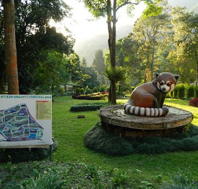

|
Located about 14 kilometres south of Gangtok near Ranipool in the Pakyong District, Saramsa Garden (historically known as the Ipecac Garden) was established in 1922 by the Sikkim Forest Department under Rai Saheb Bhim Bahadur Pradhan. Originally a fruit orchard for the Chogyal and later an ipecac plantation from 1940 into the 1970s, it now serves as a botanical garden and orchidarium-especially after hosting the 2008 International Floriculture Show. Highlights and Visitor Tips
Traveler Review"Loved walking through the orchid greenhouses and quiet terraced lawns. A calm, green break just a short drive outside Gangtok." - Priya Das Visitor Feedback Form |
 |